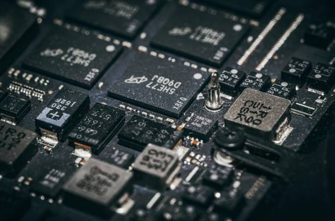

Virtualized Object Shell (VOS)
Typed memory pipelines and native process sandboxing replacing fragile legacy text shells.

Created by Adrian Morawski in 2025. E-Waste Manifest, new Operating System for all. Now this Foundation is more than we expected. We believe MacroMag is going to be a big thing in the IT world, so check this out.
MacroMag – a 64-bit online architecture based on magnetic modularity to fight e-waste. The first Python emulator is available in this repository (GPL v3). I need C/Rust devs and engineers to help build the microkernel. operating-system, microkernel, emulator, python, cpp, open-source-hardware, sustainability, retrocomputing.
Typed memory pipelines and native process sandboxing replacing fragile legacy text shells.
Zero-telemetry, deterministic bare-metal core written in Rust and C for digital sovereignty.
Fighting planned obsolescence through decentralized Phantom BIOS, magnetic/pogo-pin interconnects, and real-world hardware recycling.
Adrian Morawski (Founder & Lead Architect) • Alan Morawski (Core Administrator & Security) • Maldyrek (Operations & Community)
MacroMag is an open-source hardware-software ecosystem licensed under GNU GPL v3.0, focused on digital sovereignty, zero-telemetry execution, and modular computing to reduce electronic waste (e-waste). Our three-person core maintainer team (Adrian Morawski, Alan Morawski, and maldyrek) is currently developing a 64-bit RISC-V microkernel prototype, the Virtualized Object Shell (VOS), and a Rust/C execution runtime. Joining Open Source Collective will allow us to transparently manage community grants, accept sponsorships, and fund open hardware prototyping without forming a commercial entity.
“CEO, Main Visor”

“The MacroMag Project Helper And Official Admin …”
“MacroMag Code Law Security Man”